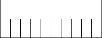
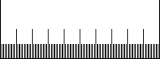

| Consider a centimeter. We shall successively divide it into tenths, and the tenths into tenths, and so on. | |
| First, divide the centimeter into tenths, left to right. Assign an address 0 to the left tenth, 1 to the next tenth, 2 to the next tenth, ..., 9 to the right tenth. |  |
| Next, subdivide each tenth into tenths. From left to right these thnths of tenths have addresses 00, 01, ..., 09, 10, 11, ..., 19, 20, ... , 99. |  |
| If the centimeter represents the numbers between 0 and 1, then these addresses are just the decimal expansions of all the real numbers between 0 and 1. Here are the corresponding functions. | |